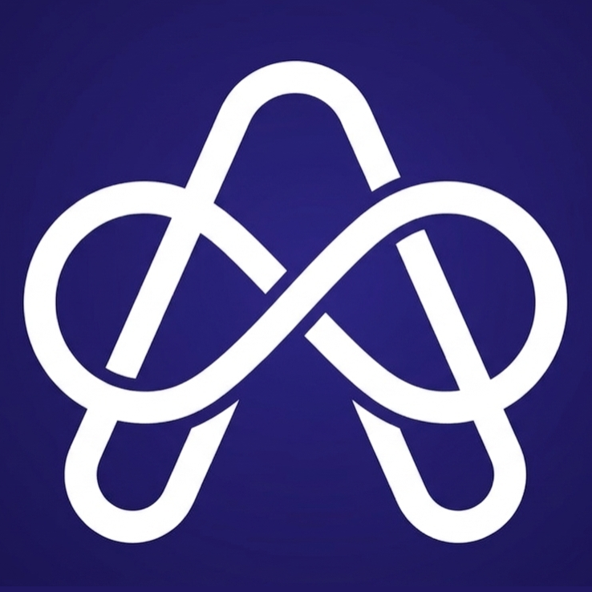

Literature Survey
The project reviews semantic similarity, research gap identification, graph-based recommendation, blockchain-backed integrity, and NLP-assisted supervision support.

ResearchLensAI Powered Research Gap Identifier and Trend Analyzer
An academic research lifecycle platform that helps students validate research ideas, identify emerging trends, find suitable supervisors, manage supervision activities, and maintain trustworthy research records.
Integrated research support components
Semantic analysis, recommendation, and summarisation support
Final-year research project lifecycle support
Domain
ResearchLens focuses on supporting students, supervisors, and coordinators throughout the academic research project lifecycle. The platform combines idea validation, supervisor matching, research integrity, collaboration, and progress review into one integrated research support environment.
The project reviews semantic similarity, research gap identification, graph-based recommendation, blockchain-backed integrity, and NLP-assisted supervision support.
Existing tools often support isolated tasks only. Students still need connected support for idea validation, supervisor selection, progress tracking, and trusted academic record management.
How can an AI-assisted platform support the research lifecycle from topic exploration and supervisor matching to supervision review and integrity & governance?
Develop four connected components for semantic gap detection, supervisor recommendation, integrity & governance, and collaborative supervision support.
The solution follows an applied design-and-development approach with modular services, shared data storage, AI model integration, workflow testing, and scenario-based validation.
React, Node.js, FastAPI, PostgreSQL, Docker, SBERT, FAISS, Graph Neural Networks, Web3.py, Solidity, SHA-256, BART, Gemini AI, and Socket.IO.
Platform Components
Validates research ideas by comparing student proposals with academic literature using semantic similarity, retrieval, and gap classification.
Recommends suitable supervisors using topic understanding, graph-based relationships, workload feasibility, and role-specific request handling.
Protects academic records using hash-based provenance, duplicate detection, tamper-evident events, and blockchain anchoring.
Supports research collaboration through logbooks, supervisor review, progress tracking, communication, and NLP-based activity summaries.
Milestones
Key assessments, deliverables, and checkpoints completed throughout the IT4010 research project lifecycle.
2026 – January
Initial topic assessment submission and approval for the proposed research project.
2026 – March | Marks allocated: 10%
Initial project proposal outlining the research problem, objectives, methodology, expected contribution, and project plan.
2026 – May | Marks allocated: 15%
First progress presentation demonstrating the initial prototype, literature review findings, and preliminary implementation results for each component.
2026 – August | Marks allocated: 25%
Second progress presentation covering advanced implementation, integration between components, validation results, and refined methodology.
2026 – October
Final project demonstration, integrated solution validation, thesis submission, and evaluation of individual contributions.
Documents
This section provides access to the main project documents, including the TAF, individual proposal documents, checklist documents, individual thesis drafts, and the common group thesis draft.
Slides
This section includes the presentation materials prepared for the main project evaluation milestones.
Videos
This section contains project demonstration videos and individual component walkthroughs prepared for evaluation and review.
About Us
The project is developed by four students, with each member responsible for one component of the integrated ResearchLens platform.
Semantic Analysis and Gap Detection Module
IT22141842@my.sliit.lkRecommendation and Collaboration Network
IT22629562@my.sliit.lkCollaborative Workspace and NLP Supervisor Assistant
IT22555380@my.sliit.lkIntegrity & Governance and Blockchain Ledger
IT22097156@my.sliit.lkAcademic Guidance
The project was completed under the academic guidance of the following supervisors.
Department of Information Technology, SLIIT
Department of Information Technology, SLIIT
Contact Us
Contact the team about evaluation, documentation, or a ResearchLens demonstration.